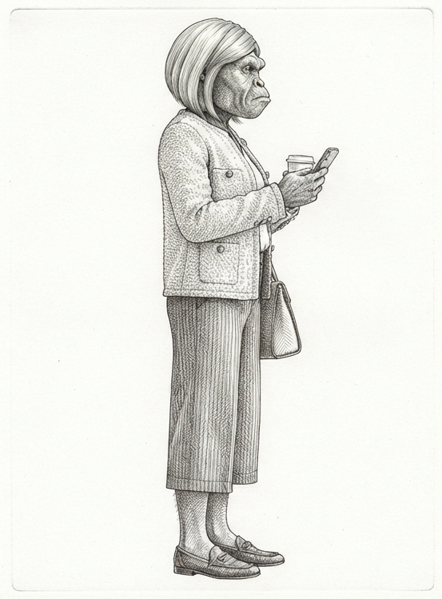

International Coalition against Karens
Solidarity and Compassion United
Homo karenus
The Homo karenus is an offshoot species of Homo sapiens.

This offshoot has grown so inwardly calcified by an irresistible compulsion to antagonize anything and everything it can justifiably get away with that it tragically dominates its interactions with Homo sapiens.
These behaviors are invariably rooted in deep, unresolved emotional energy/issues that have compelled the Homo karenus to abandon all hope of abstaining from this inner compulsion, and its lamentable control over its life. It is thus a tragic figure.
Unfortunately, unlike Homo neanderthalensis, Homo habilis, Homo erectus, and other offshoots of Homo sapiens, the Homo karenus is a parasitic species with regard to Homo sapiens.
Thus, it is critical for the intrepidly sovereign Homo sapiens to explore and master evolutionary adaptations that will facilitate a vibrant, thriving life, immune to the Homo karenus. This is the purpose of ICK.
One of the best methods for dealing with a Homo karenus is the Kung Fu stare:
The eye gaze goes soft, seeing through the charging Homo karenus, absorbing no energy, and reacting not.
An effective Homo karenus encounter may be produced simply by embodying this noble silence, and walking away with no response to the befuddled karenus. It is thus forced to digest its own irrational tirade internally, rather than through the habitual unhealthy mechanism of an external transference.
Extra points if one cannot remember what the Homo karenus said after the encounter. This requires complete and utter spiritual concentration, and is thus an advanced technique.
The critical part is absorb no energy.
The Homo karenus, tragically, knows that it will never get attention in the same ways that it could manipulate out of people in its youth. It is a lamentable by-product of the cultural objectification of the female body, to be pitied, as its over-reliance on these earlier strategies has left it throwing up its hands in an attempt to get its needs met post-mutation. For its attack to succeed, it must reverse the transference of energy by attempting to penetrate its victim energetically, in order to satisfy this inner compulsion discussed earlier. It is thus critical to ensure that one absorbs no energy from the charging Homo karenus, in order to thwart this energetic transference from occurring.
Individuals who had overbearing mothers in their youth, and were habituated to hunch their shoulders and shrink when scolded, will often find absorbing no energy too far reaching a goal, at first. In this case, it is advisable to work up to the Kung Fu stare in stages, and use transitional methods in the meantime:
Simply apply these principles:
1) Nothing the Homo karenus says has anything to do with you. Make sure to remind it of this fact constantly.
2) The Homo karenus thrives on feeling powerful and important. This appears to delay its existential emptiness for a brief moment in the long thread of its existence. It appears worth the sacrifice, even though a part of it is aware of the tragic flaw in this logic.
It knows deep down that its power is an illusion, only maintained by the atmosphere of fear and complicity it is enslaved to unceasingly weave around it. Like Sarah and Jareth in The Labyrinth, simply knowing that Homo karenus has no power over you goes a long way towards immunity.
One can employ the internal mantra “you have no power over me, you have no power over me…” at any time during a Homo karenus encounter, to great effect.
Laughing in the Homo karenus’ face is also an effective way of conveying this. You are not laughing at the Karen – you are laughing with the existential joke it has chosen to place itself at the center of. You are compassionately inviting it to mutate back to the Homo sapiens species, when it is ready.
Finally, we here at ICK have developed the ICK method, for your empowerment:
1) Say “ick” in a disgusted voice
2) Walk away
Those who are in the know, will know. Those who don’t, won’t.
Extra points if you hand the Homo karenus (and anyone else you know) the Humble ICK QR sheet. It may mark a turning point in its evolutionary path, and possibly be the best gift that anyone has ever given it. After reading this page, great insight might occur within the suffering karenus, inspiring it to mutate back to Homo sapiens. Note the generic floral design, designed to reduce the karenus' defenses gently and compassionately. Simply cut the Humble ICK QR sheet into quadrants after printing.
Have interesting or informative karenus encounters captured on video? We invite you to submit these, as part of our ongoing cultural research and activism. We will review and publish these submissions, towards a growing and thriving ICK community, as well as a broader evolutionary immunity to the unfortunate parasitic activities of Homo karenus.
Thank you, from your humble servants at ICK.
;)
[invite website viewers to make their own Karen videos, and submit them]